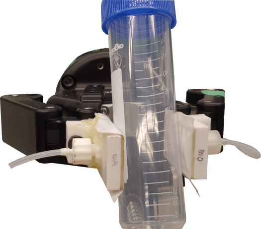

Hi! I'm Katie, a roboticist and engineering design educator with a Master's of Applied Science (Mechanical Engineering) from the University of Toronto.
This website showcases a selection of my recent projects and experiences.
I am actively developing the site and adding content on an ongoing basis.
Feel free to reach out using the links below for more information!
Figure 1: Inflated adaptive gripper fingerpads gripping a round object.
My Master's degree research focused on the design and characterization of friction-tuning adaptive fingerpads for robotic grippers (shown in Fig. 1).
The fingerpads feature a thin, flexible contact layer atop a rigid base layer into which I milled pneumatic channels.
These two layers are connected via an adhesive mid-layer with structured (patterned) cutouts.
When the fingerpad's internal pneumatic chamber is inflated or deflated, the contact surface deflects up or down in each of the structured active regions defined by these mid-layer cutouts (as shown in Fig. 2).
My thesis tested the extent to which these actively adaptive fingerpads could modify grip friction when installed in place of a commercially available two-fingered gripper's stock fingerpads.
Figure 2: Depiction of gripping 'modes' for actively adaptive fingerpads with surface microtopography.
When the fingerpads are inflated as in (c), their surfaces push closer to a gripped object than in the neutral state shown in (a); conversely, when the fingerpads are deflated as in (b), their active region surfaces retract away from a gripped object.
While developing the design for these fingerpads, I had two key design goals: first, creating adaptive surfaces that could measurably and repeatably tune friction at the grip interface; second, fabricating using common and/or inexpensive materials and processes.
The layers (shown in Fig. 3) were fabricated as follows:
I laser cut the outline of the base layer piece from acrylic and then used a CNC milling machine to cut the pneumatic channels. Acrylic can be difficult to machine, especially when using small bits, so this took some trial and error.
To attach the base layer to a pneumatic controller, I drilled a hole through the back of the layer into the pneumatic channels, press-fit a luer lock fitting to the hole, and used two-part epoxy to seal the joint.
To attach the base layer to the gripper fingers, I 3D printed a mounting block with the Robotiq 2F-85 finger hole pattern and attached the block to the back of the base layer with epoxy.
I laser cut the outline and active region (hole) pattern of the middle layer piece from 3M VHB tape (a strong double-sided acrylic foam core tape).
I then stuck one side of the middle layer to the base layer as shown in Fig. 4.
The contact layer material and parameters were the main design variables, so the contact layers varied from thin, everyday tape pieces to custom printed microtopography elastomer surfaces.
I stuck the tape-based contact layers directly to adhesive mid-layers, but the relatively low surface energy of the printed surfaces interfered with interlayer adhesion.
To get these layers to adhere properly, I increased the post-assembly rest time and/or used plasma surface activation to treat the top layers pre-assembly.
Once the fingerpads were assembled and epoxy joints had set, I used my lab's multichannel pneumatic controller to test that the active regions of each fingerpad surface responded appropriately to pneumatic control inputs.
Figure 3: Model of fingerpad contact (red), middle (beige), and base (blue) layers.
Figure 4: Photo of two pairs of partially assembled fingerpads.
The fingerpads that I tested the most extensively simply used PVC (electrical) tape pieces as their contact layers.
Even with these simple surfaces, actuating the fingerpads produced significant differences in shear friction.
For instance, the force required to pull a PTFE-wrapped wooden block from between two adaptive fingerpads (using my shear force test setup) was 62% higher when the fingerpad active regions were inflated after gripping.
Interestingly, deflating the fingerpads after gripping had almost no impact on grip friction despite the contact area reduction caused by retraction of the fingerpad active regions.
Using the printed microtopography surfaces (e.g., the ridge surface shown in Fig. 5) increased friction overall (i.e., increased the force necessarily to initiate and maintain sliding of a gripped object), with otherwise similar frictional behaviour to the PVC fingerpads.
Figure 5: Close-up photo of printed surface with short ridge (blocky) microtopography features distributed across the active regions.

Figure 6: Inflated adaptive gripper fingerpads gripping a cylindrical object.
Some recent works (e.g., Pozzi et al. in 2024 or He et al. in 2020) use pneumatically actuated soft fingers or fingerpads as both sensors and actuators.
In addition to controlling fingerpad behaviour, air pressure signals are used to detect changes in the shape of the fingerpads.
As a proof of concept, I explored this sensory ability of the adaptive fingerpads by gripping various object shapes (e.g., the tube in Fig. 6) with inflated fingerpads and recording the changes in pressure that occurred when the gripped object compressed the inflated fingerpad regions.
Pressure increases were visible within the fingerpad pressure data in a fraction of a second after object contact, indicating that my fingerpad design could also be used for basic object detection.
One interesting feature of these fingerpads is their ability to use morphological changes for more macro-scale grip interactions.
While the friction between two flat surfaces is a very small-scale phenomenon, interlocking (Fig. 8) and enveloping (Fig. 7) interactions can create mechanical connections that are visible at the macro-scale and drastically alter grip friction.
If an object is interlocking with deflated fingerpad active regions, for instance, pulling the object out of the gripper doesn't just require overcoming friction between two flat surfaces.
Rather, the gripped object must be pulled hard enough to physically deform the fingerpad surface in order to release the interlocking object parts.
Figure 7: Inflated fingerpads partially enveloping a small convex object.
Figure 8: Deflated fingerpads partially interlocking with the flange on a small object.
Skills: Microcontroller programming, soldering, motor control, sensor data processing, integration, CAD (Fusion 360, AutoCAD), CAM (3D printing, laser cutting), power tools and hand tools, assembly
During my Master's, I built a custom shear force test apparatus to run experiments that would allow me to characterize the friction-tuning properties of my adaptive robotic gripper fingerpads
I started with a pre-assembled ballscrew system (screw, base, carriage, and stepper motor) and built the remainder of the system from scratch.
Figure 1: Shear force tester while measuring the frictional force acting between a test block and adaptive fingerpads on a Robotiq 2F-85 gripper.
I used different force gauges and different device form factors when testing new surface designs in isolation vs. testing fully implemented gripper fingerpads, so I had to set up the force tester in a way that allowed me to easily swap out components or test structures.
Among other tasks, I:
designed and 3D printed limit switch mounts to keep the axis endstop sensors in place,
constructed an easy-connect test platform using aluminum extrusion (80-20) and a plate with an array of threaded holes (a "cheeseplate"),
designed and laser cut coupling plates to connect two different force gauges to the tester carriage,
designed, tested, and soldered a motor control circuit, using an inexpensive microcontroller to save money and mounting the microcontroller on headers to facilitate replacement,
designed and laser cut a mounting bracket to attach the Robotiq 2F-85 gripper to the test platform,
designed and 3D printed an assortment of sliding clamps, positioning jigs, and other tools to constrain the position of test samples relative to the test platform in a repeatable manner, and
designed and constructed a spring-loaded upper constraint plate to apply pressure to flat device samples during testing (mimicking the pressure that would be applied to a gripped object).
... basically, a LOT of CAD-CAM to facilitate repeatable experimental results!
I also wrote quite a bit of code to facilitate shear testing.
I wrote routines to control the motion of the stage, calibrate position using endstops, and read sensor data.
I also wrote code to control the gripper and read its status, and integrated the gripper code, force sensor code, motor control code, and pneumatics control code (discussed below) to create a unified, usable system.
I knew that I would have to conduct hundreds if not thousands of shear tests throughout my experimental work, so it was important to me to minimize the effort required to run each test.
Automating tasks like motor position calibration or force data scaling, cropping, and export allowed me to focus on observing qualitative aspects of the experiments, knowing that quantitative data was being gathered in the background.
I am currently in the process of cleaning up and organizing this code for use by future students, and will be adding the code to the repository for this project when finished.
Figure 2: Shear force tester: a high-capacity force gauge sits on the carriage, which is actuated by a stepper motor (controlled by the microcontroller circuit in the top left and an unpictured stepper driver) to pull objects from the Robotiq gripper's grasp.
Figure 3: Shear force test procedure used in early prototyping to test friction between a single flat adaptive surface device and a test sled. This stage of testing used a lower-capacity force gauge.
Skills: Microcontroller programming, soldering, motor control, sensor data processing, integration, CAD (Fusion 360, AutoCAD), CAM (3D printing, laser cutting), power tools and hand tools, assembly
The adaptive friction-tuning gripper fingerpads that I designed during my Master's are actuated using pneumatic control, with different channels independently controlling different fingerpads.
When I started my degree, there was already an existing multichannel pneumatic control apparatus that had been designed by a previous student, but the apparatus had become damaged over time.
The Arduino microcontroller code that controlled the system was also set up for only a few specific procedures and lacked some of the operations and communication abilities that I needed.
I therefore spent a bit of time fixing the apparatus and rewriting its software.
Specifically, I rebuilt damaged/loose power connections and replaced various jumper wire connections with screw terminal connections.
I still think that the apparatus (Fig. 1) has a great deal of room for improvement, but the wiring is now significantly more controlled and less vulnerable to loose or detached connections.
I also rewrote the code to use a modular approach in which the Arduino could receive two-letter command codes from a higher-level testing program over serial, interpret the commands, and return pressure or state information as needed.
The Arduino runs a continuous control loop and regulates pressure in a positive and negative set of input channels on an ongoing basis, and opens valves to connect these channels to output devices (Figs. 2,3) upon request.
Figure 2: Early adaptive surface device prototype with attached luer lock fitting and supply tube.
Figure 3: Inflated PVC-based fingerpad devices. The active regions are the raised sections of the fingerpad surface.
Dual-axis confocal-light-based 3D scanning system | Legere Reeds Ltd.
Role: Design engineer
Period: 2021, 2025
Skills: Microcontroller programming in MicroPython, soldering, assembly, motor control, sensor data processing, integration, user interface design, point cloud transformations
Links: N/A, proprietary
Figure 1: System scanning the 3D profile of one half of a double reed.
While working for Legere Reeds Ltd., I designed the code and circuits for a confocal-light-based 2.5D scanning system.
The confocal displacement sensor (Keyence) is a high-precision 1D laser displacement sensor that performs well on curved and rough surfaces.
My employer designed the mechanical components of the system (including the bi-level mounting plate, the dual-axis linear stage, the mount for the sensor, and the small double reed mounting piece).
I designed the motor control circuitry, the connections to the confocal displacement sensor and the axis endstop switches, the scanning system logic, the user interface, and the data analysis code.
This was my first real hardware project, and it was an excellent learning experience--having the opportunity to build on my existing mechanical and software skills by designing an embedded system start-to-finish really helped me to connect and integrate my scattered knowledge from circuit/electronics coursework.
I used a Raspberry Pi single-board computer to control the scanner system.
I soldered a motor control circuit using protoboard and connected the circuit outputs to the motor wires with twist nuts for ease of repair and assembly.
I developed the code entirely in Python, and used Tkinter to create a graphical user interface for running scans.
To run the scan, I wrote a scanning routine that passed the reed under the confocal displacement sensor in a raster pattern.
Sensor measurements were recorded at regular intervals and used to create a point cloud representing the reed's height at each gridpoint.
I used transformation matrices and outlier rejection to process the scan data, resulting in a fairly flat-based and low-noise scanned surface map.
Revamp of VBA-based custom CAD-CAM system | Legere Reeds Ltd.
Role: Design engineer
Period: 2019-2021, 2025
Skills: Software development in VBA and Python, user interface design, technical writing and code documentation
Links: N/A, proprietary
During my undergrad internship, I spent 16 months redesigning the software system that Legere Reeds Ltd. uses to manufacture their reeds.
This system uses reed design information stored in Excel sheets and text documents and, from this design information, generates a model of the final reed, takes in a series of machining sequence parameters, and generates G-code that controls a CNC machine and cuts the reed from a stock sheet of plastic.
I am not at liberty to divulge many of the details of this project, but suffice to say that overhauling this software was a massive undertaking.
The original software was written in VBA and used a different script for each individual reed design.
This distributed set of scripts made it difficult for the original code authors to write consistent code and made altering the system in any way a massive high-effort undertaking.
I reported directly to the company President and developed a software map based on his main vision for the software: to have a system that uses only a few centralized software tools to create the manufacturing code for all of the different reed products.
During my internship, I developed a centralized CAM tool that took in text files with design, machining sequence, and tool information for any product and any machine and generated valid G-code.
I also developed tools to generate and edit the reed CAD data, machining sequence parameters, tool and machine design.
To streamline my debugging process and augment the manufacturing staff's pre-manufacturing verification processes, I also built a few software tools to simulate and compare different design files or G-code files.
I also designed a graphical user interface for the tools (in consultation with the end users, the manufacturing staff) and wrote extensive user documentation and some technical reference materials.
I wrote the majority of the code in VBA (since that was what the manufacturing staff were used to and comfortable debugging if need be) but also did some data analysis with Python here and there.
I have since worked for Legere Reeds Ltd. on a contract basis to make occasional updates and modifications to the code, and I am currently completing a final contract to add some additional documentation and code fixes while I look for a full-time job.
Sensor and actuator laboratory activity modules | Division of Engineering Science (ESC204: Praxis III)
Role: Course instructor (lead instructor for Systems Prototyping)
Period: 2021-2024
Skills: Microcontroller programming in CircuitPython, breadboarding, technical writing
Figure 1: Stacked student component kits from a sensor and actuator laboratory activity.
ESC204 is a relatively new course in the Engineering Science program.
The course first ran in Fall 2021, replacing an older mechatronics prototyping course as the core design course for second-year EngSci students.
ESC204 is considered a "capstone" course for the first half of the EngSci program.
Each year, our 220-300 students are first guided through a "Prototyping Bootcamp" phase, where they learn the basics of microcontroller circuits and programming as well as CAD-CAM design for rapid prototyping (3D printing/laser cutting).
After the Bootcamp phase ends, students work in an "opportunity space" (i.e., a broad issue or field within a broad and typically global geographic area) in teams and propose a mechatronic or Internet of Things (IoT) design concept that could provide value to stakeholders living/working in that opportunity space.
In the final phase of the course, students apply their hands-on prototyping skills to specify, build, and test one or more high-fidelity prototypes for their proposed design concept.
I first started working with the course as a course development teaching assistant (TA) in early 2021, and was then a studio (tutorial) TA in the first run of the course in Fall 2021.
In subsequent semesters, I took on a course instructor role and became the lead instructor for the systems prototyping part of the course.
In this role, I was responsible for developing the Prototyping Bootcamp materials (i.e., drafting lab documents, liaising with the fabrication facility to acquire electronic components and arrange rapid fabrication, design assessments, etc.).
I also supported students through their prototyping in later parts of the course, both by delivering lectures and writing guides and by providing 1-1 support.
Working as a course instructor over the last few years has given me the opportunity to work on a variety of rewarding projects (including an assessment system that automatically imports data from rubrics for calibration, a >200 page Prototyping Handbook document, and various CAD tutorial videos and resources), but I want to highlight the lab activities that I developed for the Prototyping Bootcamp phase.
Previous teaching team members drafted the first iteration of the lab materials, and when I became an instructor, I made it my mission to significantly expand and deepen these materials. I wrote pre-lab and lab instructions with structured callout boxes and multiple types of circuit representations, wrote Handbook chapters with deeper theoretical information (e.g., explaining the types of constraints in parametric CAD software), and organized lab equipment dispersal to improve clarity for students and ease the workload for TAs.
Fig. 1 shows some of the kits that I put together, where I separated components by circuit type (e.g., with the components for a DC motor circuit in one bin and the components for a solenoid circuit in another) and used a labelmaker to identify each container and list the specific components that were included.
I have heard from some former students that they have gone on to use the lab documents and Handbook in upper-year coursework, and I have also frequently found my own resources useful when mentoring non-EngSci students---having an explanatory resource on hand is always helpful.
I've also noticed that the specific parts organization protocol that I followed made labs run more smoothly and freed up TA time to help students rather than requiring them to distribute components constantly.
I have even used materials that I developed for these labs as a starting point when developing workshops for outreach or inclusion events! Overall, I'm proud of my work in this course, and the experience of writing lab documents has taught me how to communicate technical information more clearly and effectively.
Introductory mechatronics workshop modules | WISE National Conference
Role: Workshop organizer and Women in Robotics representative
Figure 1: Assorted sensor and actuator modules from Mechatronics 101 workshop.
This "Mechatronics 101" workshop was created for the Women in Science and Engineering National Conference in Toronto in January 2025.
I designed and fabricated the workshop modules solo and co-facilitated the workshop day-of with my fellow Women in Robotics Ontario Chapter organizer, Mia.
Unlike the materials that I created for the Praxis III course, the materials for this workshop had to be accessible for an audience with widely varying base knowledge.
Attendees ranged in age from high school students to graduate students and, although some were in engineering programs (or even former students), many were in non-engineering programs.
Accordingly, I created a workshop that would provide a gentle introduction for beginners while still engaging those with relevant experience.
I framed the workshop around the following description:
Mechatronic systems are everywhere! Learn how to write software to control hardware, then practice combining sensor and actuator modules to design and test functional mechatronic systems.
Breadboarding your first microcontroller circuit can be tricky.
Moreover, circuits and hardware can be particularly intimidating for women (who tend to have less exposure to and social contact with hands-on skills in childhood and adolescence).
I wanted to reduce the barrier to entry and allow participants to get a taste of the joy of building mechatronic systems!
So, rather than tasking participants with building sensor and actuator modules from scratch, I blackboxed the components themselves by enclosing the sensor and actuator circuits in laser-cut wooden boxes, abstracting them to just the sensor and power, ground, and logic/signal wires.
This simplified each component to allow participants to focus on the key connections: power and data.
This allowed participants to spend their time integrating different sensors and actuators and creating satisfying working systems rather than fiddling with resistors and jumper wires!
According to the conference organizers, the workshop was very well received:
"Your workshop was by far the highlight of Saturday -- afterwards, we got so much feedback from attendees that they enjoyed your workshop in particular.
I think you both took our push for interactivity and amped it up to 100, which truly set it apart. The effort you put into sourcing and laser cutting all the required parts was honestly beyond our expectations.
Thank you so much for putting in the effort to make something truly special!"
We also received positive feedback from participants directly, some of whom went on to join Women in Robotics Ontario.
Other event organizers have since reached out to plan a similar workshop, and we hope to reuse the modules and repeat the workshop very soon!
I enjoyed this project because it gave me a chance to design for user experience and aesthetics.
Typically, my circuits are housed in functional but boring enclosures.
I wanted these cases to be both instructive and attractive (or at least visually unobtrusive)!
I really enjoy thinking about how a design will be interpreted and paying attention to the details of fabrication (as opposed to the "quick and dirty" approach encouraged in prototyping in research work), so I'm looking forward to doing more of this detail-oriented, user-focused design and fabrication work in the future.
Figure 2: Raspberry Pi Pico microcontroller inserted into solderless breadboard and covered. The cover guides the user to relevant pins (power, ground, GPIO).
Figure 3: Photoresistor module. The photoresistor can be easily inserted or removed without damage, facilitating reuse of both sensor and enclosure.
Some specific fabrication details: Laser-cutting box joint teeth into the sides of the wood facilitated quick assembly. Laser engraving allowed me to add instructions and labels.
I used an open source box generator [[boxes.py]] to design the side profiles, then sketched engravings and through-cut lines in AutoCAD.
I submitted my drawings to the laser cutting and engraving service at my university's fabrication facility, and then simply friction-fit the box joints together.
I assembled the circuits by either soldering wires together directly (for simple circuits) or soldering circuits using protoboard.
The participant groups each received a Raspberry Pi Pico microcontroller board that was inserted into a solderless breadboard and covered by a laser -cut pin shield that left only select (labeled) power, ground, and GPIO pins visible.
I also provided sample MicroPython code (which I used to test every module prior to the workshop).
The modules weren't perfect--there are some issues to fix before round 2, e.g., insufficient clearance for the box hinges in some cases.
However, I'm overall quite proud of achieving such an ambitious workshop plan.
To prepare for the workshop, I designed and tested 40 total boxes in 7 distinct designs and 8 types of components, assembled the boxes, laid out and soldered the circuits, and prepared participant materials all over the course of 1 month while also finishing revisions to my thesis and conference paper.
Moreover, I was operating with restrictive financial constraints, with a budget of less than $100 for a 100-person workshop.
The Myhal Fabrication Facility's low-cost rental program made this easier, but low budget definitely still severely constrained my fabrication options.
Creating this workshop was a daunting task, but seeing the participants enjoying themselves integrating different sensors and motors to create basic mechatronics systems made the work worth it.
I look forward to updating the module designs for future use!
Education
Master's of Applied Science in Mechanical Engineering
M.A.Sc. thesis, Fingerpads with Adaptive Surface Properties for Robotic Gripping, defended
Exploring applications of surfaces with adaptive contact properties to robotic gripping.
Prototyping and characterizing pneumatically actuated active surfaces with tunable frictional properties (using different material types and microtopography designs).
Designing and characterizing custom active surface fingerpads for an underactuated industrial robotic gripper.
Check out the adaptive gripper fingerpads, shear force tester, and pneumatic controller projects above for more details!
Relevant courses (and grades) included Introduction to Deep Learning (MIE1517, A+) and Nanomechanics of Materials (MIE1744, A).
Bachelor's of Applied Science in Engineering Science (Robotics Major)
B.A.Sc. thesis, Control-theoretic model for flocculus to simulate optokinetic response behaviours, presented
My undergraduate thesis focused on adaptive internal modelling of the human cerebellar nodulus-uvula as a control system.
I was supervised by Prof. Mireille Broucke (Systems Controls Group, Department of Electrical and Computer Engineering).
My coursework also included the following projects:
Control algorithms for path planning using a simulated mobile robot (Gazebo in ROS)
Kinematics for obstacle avoidance using a simulated manipulator (MATLAB)
Design of a fixed-output-voltage power supply circuit (PSPICE) and preliminary layout of PCB (Eagle)
Design and prototyping of structural and electromechanical subsystems for simple robots (CAD in SolidWorks, woodworking and conventional machining, digital fabrication, programming microcontrollers)
My fourth-year GPA was 3.97 out of 4. Relevant courses (and their grades) included:
Data Structures and Analysis (CSC263, 82/A-)
Mathematics for Robotics (ROB310, 80/A-)
Microprocessors and Embedded Microcontrollers (MIE438, 86/A)
Robot Modeling and Control (ECE470, 90/A+)
Linear Control Theory (ECE557, 92/A+)
Computer Vision for Robotics (ROB501, 85/A)
Scientific Computing (AER336, 90/A+)
Mechatronics Systems: Design and Integration (MIE443, 86/A)
Mobile Robotics and Perception (ROB521, 87/A)
Work and Teaching Experience
Design Engineer | Legere Reeds Ltd.
16 month internship (May 2019 to Aug. 2020) and subsequent contract work
Independently redesigned production software in consultation with company founders and production staff.
Restructured and rewrote CAD-CAM process code (in VBA) to control custom manufacturing of reeds.
Calculated reed surface profile curves using Python curve fitting and image analysis.
Developed user interface and documentation for machine operators based on code flow and work protocol.
Built virtual simulator of reed cutting process and created programs to test and compare data files.
Created and tested design files and machining sequences for new reed designs.
Designed and fabricated a 3D profile scanning apparatus using a confocal light sensor.
Wrote control software on a Raspberry Pi to actuate a 2-axis linear stage while taking in displacement data.
Programmed data transformation and correction functions to interpret surface scan data.
Wrote extensive user documentation for scanner (including assembly, usage, and troubleshooting instructions).
Course Instructor | Division of Engineering Science, University of Toronto
5 semesters (Jan. 2022 to present) plus teaching assistant appointments across two courses (ESC103 and ESC204).
For ESC103 (Engineering Mathematics and Computation):
Delivered lectures on engineering mathematics and computation to class of 150 students.
Created in-class programming labs (with solution code) and assessments focusing on numerical computation in MATLAB.
Developed student self-assessment quizzes and instructional slides for tutorials.
For ESC204 (Praxis III), an engineering design and hands-on prototyping course:
Delivered lectures on technical design, modelling, prototyping, and debugging to classes of 220-300 students.
Wrote course handbook with over 200 pages of content, including both theory and practical exercises.
Designed, tested, and facilitated lab assignments to teach CAD-CAM, breadboard circuitry, and microcontroller programming skills.
Coordinated acquisition and distribution of components for labs with fabrication facility staff, including mailing lab kits internationally during online classes.
Research Assistant | York University
Undergraduate summer research (May 2017 to Aug. 2017)
Explored novel methods of digitally fabricating microfluidic devices to hydrodynamically focus fluids.
Designed, prototyped, and tested a 3D printed hydrodynamically focusing nozzle for use in printing electronics.
Reported results at weekly meetings with supervisor and other researchers.
Presented poster at Undergraduate Summer Student Research Conference.
Standard First Aid Instructor | Lifesaving Society
8 years part-time (2014 to 2022)
Coordinated 12 courses as a Lifesaving Society Affiliate and 10 through external organizations.
Organized facility bookings and equipment and examined over 200 candidates.
Developed training videos to adapt course to online delivery in 2020-2021.
Volunteering and Leadership
Chapter Organizer | Women in Robotics Ontario Chapter
Since chapter founding (Oct. 2022 to present)
Organized professional development and community-building events for local roboticists.
Worked with other local groups for diversity in tech to host panel events and workshops.
Collaborated with other global chapters to mentor others and plan international initiatives.
Design Team Association Director | Engineering Society, University of Toronto
1 year term as Project Director (Apr. 2019 to May 2020)
Organized acquisition of and move to several new workspaces on and off campus.
Consolidated tool/equipment needs and working protocols of the University of Toronto Engineering Society's two dozen design teams to develop proposals for a shared workshop.
Set up centralized safety training in collaboration with the Myhal Light Fabrication Facility staff.
Coordinated use and maintenance of major design team resources, including the Engineering Society van.
Acted as a liaison between the design teams, the Engineering Society Officer team, and the Faculty.
EngSci Education Conference (ESEC) Director of Operations | Division of Engineering Science, University of Toronto
Member of executive team (Apr. 2019 to Jan. 2020)
Organized conference logistics as part of an student executive team for the 15th annual Engineering Science Education Conference (ESEC). This conference is attended by all first and second year Engineering Science students (about 400 total).
Trained and directed a team of over 40 volunteers in five positions.
Worked with executive team to create two new events: Fireside Chats and a post-conference reflection workshop.
Vice-Chair Operations | Orientation Committee, Engineering Society, University of Toronto
Member of executive team (Apr. 2019 to May 2020)
Organized training, logistics, and operations for the University of Toronto Engineering Society 2018 (1T8) Orientation Week.
Managed 7 of the 21 Orientation Week subcommittees.
Planned events for 1000 incoming students over 7 days with a $100,000 budget.
Created a website with Wix to facilitate leadership information distribution and online training for 500 leaders.
Publications, Awards, and Certificates
Publications
K. Allison, J. Kelly, and B. Hatton.
``Structured Pneumatic Fingerpads for Actively Tunable Grip Friction,'',
to be presented at 2025 IEEE Intl. Conf. on Soft Robotics, Lausanne, Apr. 2025,
arxiv.org/abs/2502.00926
R. Codd-Downey, M. Jenkin and K. Allison,
``Milton: An open hardware underwater autonomous vehicle,''
2017 IEEE Intl. Conf. on Information and Automation, Macau, 2017, pp. 30-34,
DOI:10.1109/ICInfA.2017.8078878.
Awards
Dean Yip presenting me with the Teaching Assistant Award at a Faculty Council meeting.
2024 Teaching Assistant Award from the Faculty of Applied Science and Engineering, University of Toronto
Awarded for excellence in teaching and course development as a Teaching Assistant at the University of Toronto.
My nomination included a personal teaching statement as well as letters of reference from multiple professors and many (exact number unknown but at least a dozen) former students.
Each Department/Division in the Faculty nominated one TA from the (sometimes hundreds) of TAs working in the Department/Divison.
From the nominated candidates, I was selected (along with one other TA) by a Faculty Council committee.
See the Department of Mechanical and Industrial Engineering's news article!
2021 Student Leadership Award from the University of Toronto
Awarded to a small group of graduating students (18 Engineering recipients selected from 1,925 graduates) for outstanding student leadership, service, and commitment to the University of Toronto.
My nomination was supported by a staff member from the Engineering Dean's Office with whom I had worked closely when serving as the Engineering Society Design Team Association Director.
See the Division of Engineering Science's news article!
2020 Director of the Year Award from the Engineering Society, University of Toronto
Awarded annually to Engineering Society Project Directors deemed to have done the best job with their positions.
Award criteria include improvement over the work done in the previous year, the overall success and organization of their respective committee, and their personal contribution to the development of the Engineering Society through involvement at meetings and other general contributions.
Three winners are selected by vote of the Engineering Society Awards Committee.
I won along with two other Directors and was recognized for my work as the Engineering Society Design Team Association Director.
2019 Semi-Centennial Award from the Engineering Society, University of Toronto
Awarded annually to a third-year student who demonstrates commitment and dedication to the Engineering Society.
Winner(s) are selected by vote of the Engineering Society Awards Committee.
I was selected along with another student with whom I worked closely.
2018 Meritorious Service Award from the University of Toronto Emergency First Responders
Recognition of exceptional service in the line of duty with the University of Toronto Emergency First Responders.
I participated in the UTEFR student group as both a responder and a first aid instructor.
I received this award for handling a particularly intense medical emergency as part of a two-person responder team.
Certificates
Note: FASE denotes the Faculty of Applied Science and Engineering at the University of Toronto